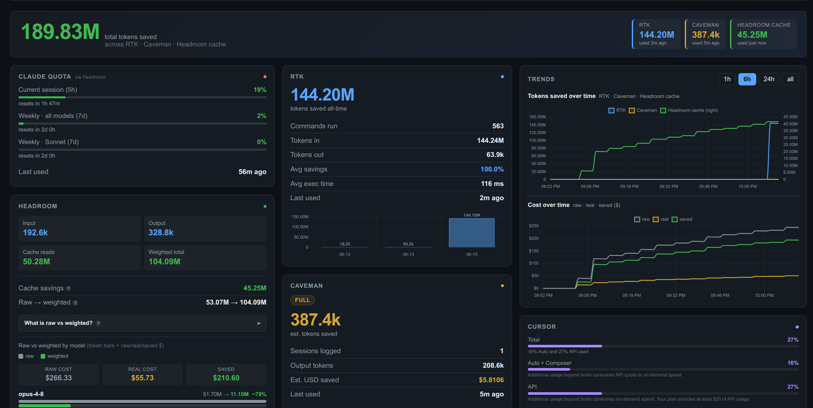

Claude Code quota tracker
5-hour session and weekly limits from Claude Code's own /usage, with a pacing tick showing how much you can still spend today.
A free, open-source, self-hosted dashboard for Claude Code quota, Cursor and Antigravity usage, and the token savings of RTK, Headroom and Caveman. Live, on one screen, with real cost math.

5-hour session and weekly limits from Claude Code's own /usage, with a pacing tick showing how much you can still spend today.
Cursor billing-period usage and Google Antigravity quota on the same board as Claude.
RTK, Headroom and Caveman savings merged, with per-model raw → real → saved USD including prompt-cache pricing.
Numbers update as you work. Time-series history for tokens saved, cost and quota burn.
Optional desktop notifications when a quota burns through its daily or hourly budget.
Runs on localhost with Node.js built-ins only. Your usage data stays on your machine.
Linux (systemd user service, serves on http://localhost:3000):
curl -fsSL https://raw.githubusercontent.com/phil288/tokenomics/main/install.sh | shOr run it anywhere Node.js 18+ runs:
git clone https://github.com/phil288/tokenomics.git
cd tokenomics
node server.jsmacOS machine-wide (launchd) install and all configuration options are in the README.
/usage command and shows your 5-hour session and weekly limits as live bars, with a pacing tick that tells you how much you can still use today.